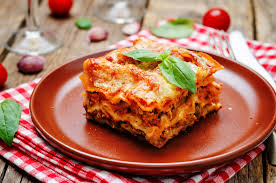

Lasagna
Home

This is a recipe for a Delicious Lasagna. Wherever you may cook this, you will feel the taste of a Nonna
Ingredients
- 12 lasagna noodles
- 1 lb ground beef
- 2 cups ricotta cheese
- 2 cups shredded mozzarella cheese
- 1/2 cup grated Parmesan cheese
- 1 jar (24 oz) marinara sauce
- 1 egg
- 2 cloves garlic, minced
- 1 tbsp olive oil
- Salt and pepper to taste
- 1 tsp dried basil
- 1 tsp dried oregano
Steps
- Preheat oven to 375°F (190°C).
- Cook lasagna noodles according to package instructions. Drain and set aside.
- In a skillet, heat olive oil over medium heat. Add garlic and cook until fragrant.
- Add ground beef, season with salt, pepper, basil, and oregano. Cook until browned. Drain excess fat.
- Stir in marinara sauce and simmer for 5 minutes.
- In a bowl, mix ricotta cheese, egg, and half of the Parmesan cheese.
- Spread a thin layer of meat sauce on the bottom of a baking dish.
- Layer noodles, ricotta mixture, meat sauce, and mozzarella cheese. Repeat layers, ending with sauce and remaining mozzarella and Parmesan on top.
- Cover with foil and bake for 25 minutes. Remove foil and bake for another 15 minutes until cheese is golden and bubbly.
- Let lasagna rest for 10 minutes before serving. Enjoy!